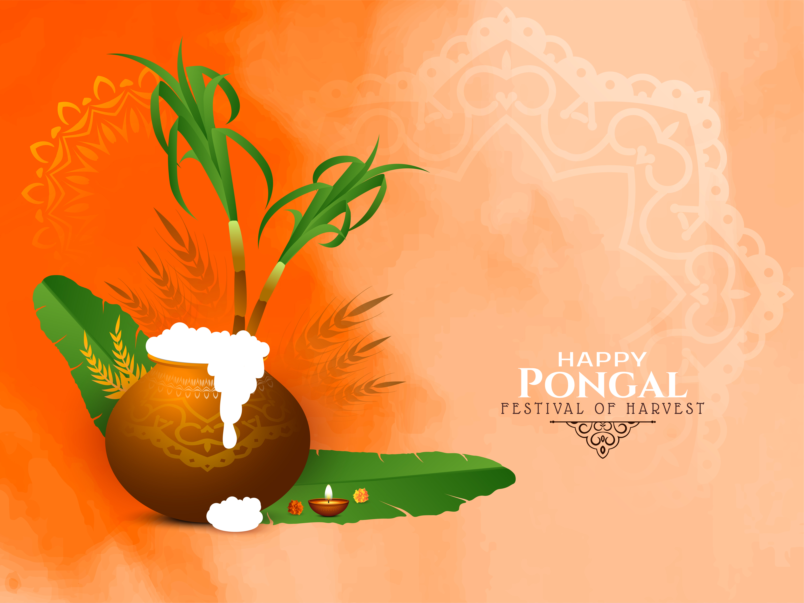

Culture plays a crucial role in shaping the identity and development of a nation. It encompasses shared attitudes, values, practices, and traditions that influence various aspects of life. In a diverse country like India, culture is represented through a vast array of songs, music, dance, theatre, folk traditions, rituals, and arts. This diverse cultural expression is recognized globally as India’s Intangible Cultural Heritage (ICH). India is home to one of the world’s most significant collections of performing arts, visual arts, literature, and crafts, each reflecting the nation’s rich history and spiritual traditions. From classical dance forms like Bharatanatyam and Kathak to the intricate art of Madhubani painting and the timeless practice of yoga, India's cultural heritage spans centuries and continues to influence global art, philosophy, and education. To preserve this rich heritage, the Ministry of Culture implements several initiatives and financial support programs for individuals, groups, and organizations engaged in performing arts, visual arts, literature, and more. These programs ensure that the art forms remain vibrant and accessible for future generations. They also support the documentation, restoration, and promotion of ancient monuments and heritage sites, ensuring that India’s history and cultural treasures are protected. The Ministry also encourages the promotion of cultural diversity through initiatives like national festivals, fairs, and workshops that showcase traditional crafts, rituals, and art forms. Through these efforts, India continues to celebrate its diverse cultural identity while fostering an environment of creativity, innovation, and artistic collaboration.

The beautiful Kartik Purnima festival or the Dev Deepawali celebrated in Varanasi or Benaras, is a visual delight.
ExploreOnam festival in Kerala, India includes a boat race called Vallam Kali, also known as the Snake Boat Race.
Explore
Ratha Yatra, is a Hindu festival in East India that involves a procession of colorful chariots through the streets
ExploreA festival that celebrates Lord Ganesh, the Hindu god of new beginnings, wisdom, and intelligence
ExploreThe earliest known human remains in South Asia date to 30,000 years ago. Sedentariness began in South Asia around 7000 BCE; by 4500 BCE, settled life had spread, and gradually evolved into the Indus Valley Civilisation, which flourished between 2500 BCE and 1900 BCE in present-day Pakistan and north-western India.
The earliest evidence of humans in South Asia dates back two million years. Between 8000 and 6500 B.C.E., people began to domesticate plants and animals. Between 5000 and 2000 B.C.E., urban settlements spread across northern regions.
Hinduism arose in the Vedic period. In the fifth century, Ashoka unified India and Buddhism spread across Asia.
Islam arrived in India in the eighth century and became a political force by the eleventh century.
After the Indian Rebellion of 1857, the British Crown ruled India directly. In 1947, the British Indian Empire was partitioned into the Dominion of India and the Dominion of Pakistan, both of which gained independence.
In 1950, India became a secular state. Prime Minister Nehru introduced a mixed economy of state-owned industry and private enterprise. India fought wars with China and Tibet and tested an atomic bomb. In 1973, Prime Minister Indira Gandhi declared a state of emergency and led a mass sterilization program. In the 1990s, the Indian economy began to grow
India is the birthplace of four major world religions: Hinduism, Jainism, Buddhism, and Sikhism.
Yoga is famous for its roots in India's ancient culture, history, and spiritual practices, which date back thousands of years. The word "yoga" first appears in the Rig Veda, a sacred text written in Sanskrit, and yoga's origins can be traced back to the Indus-Sarasvati civilization in Northern India over 5,000 years ago. Yoga is also closely associated with Hinduism, one of India's major religions, and many yoga poses and practices are rooted in Hindu mythology.
Yoga is an essential component of India's healthcare system, and it's often practiced in conjunction with other spiritual practices, such as meditation, pranayama (breathing exercises), and chanting. These practices are designed to help practitioners quiet the mind, cultivate inner awareness, and connect with the divine. Yoga also encompasses a holistic approach to life, including spiritual, mental, and philosophical aspects.
India is famous for the Statue of Unity because it honors Sardar Vallabhbhai Patel, one of the country's founders, leaders, and independence activists. Patel was the first deputy prime minister and home minister of independent India, and is known as the "Iron Man of India". He united all 562 princely states of the country to build the Republic of India. The Statue of Unity is the world's tallest statue of Patel, standing 182 meters tall. It's located on Sadhu-Bet Island in the Narmada River, about 3.5 kilometers downstream from the Sardar Sarovar Dam in Gujarat. The statue was unveiled on October 31, 2018
The statue is a patriotic symbol of Patel's legacy, and the site has become a popular tourist attraction. Some say it's one of the greatest monuments they've ever seen. However, others have criticized the project, saying it's political symbolism and doesn't add to India's rich culture.
Indian traditional music is a rich and diverse art form deeply rooted in the country’s cultural and spiritual heritage. It primarily consists of Hindustani (North Indian) and Carnatic (South Indian) classical music.
These traditions emphasize raga (melodic frameworks) and tala (rhythmic cycles), offering a unique blend of improvisation and composition. Instruments like the sitar, tabla, mridangam, and veena play pivotal roles, while vocal styles like khayal, dhrupad, and kriti showcase profound lyrical and devotional depth.
Indian classical music, often tied to festivals, seasons, and emotions, has influenced global music and continues to captivate audiences with its intricate beauty and timeless appeal.